Конструктор бизнес-процесса
Содержание
Элементы конструктора
{kind=link}
Панель элементов
Панель свойств элемента - задаются свойства либо самой диаграммы, либо выделенного элемента.
Свернуть панель свойств элемента
Ползунок для перемещения рабочего пространства
Сохранение процесса
Посмотреть XML
Сохранение и публикация процесса в движок
Сохранить в svg
Включение/ выключение отображения ошибок
Кнопки работы с масштабом
Отображения ошибок в схеме БП
Для информирования о наличии ошибки в схеме бизнес-процесса реализован режим отображения ошибок (линтер).
Режим включается/отключается по кнопке:
{kind=link}
Показывает ошибки и предупреждения как для элемента:
{kind=link}
так и суммарное количество ошибок и предупреждений для процесса:
{kind=link}
Состав панели элементов
Activate the hand tool – используется для перемещения диаграммы вверх-вниз, вправо-влево, удерживая ее левой кнопкой мыши. |
|
| 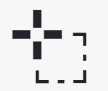 | Activate the lasso tool – используется для выделения области диаграммы - позволяет выделить несколько элементов диаграммы, удерживая левую кнопку мыши.
Выделяются все элементы, попавшие в выделяемую область.
|
| 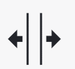 | Activate the create/remove space tool – позволяет «раздвинуть» или «сжать» диаграмму: указатель мыши ставиться на то место на диаграмме, где нужно «раздвинуть» или «сжать» диаграмму.
И удерживая левую кнопку мыши, указателем переместить часть диаграммы в нужное место.
|
Activate the global connect tool - соединяющие элементы: поток управления (сплошная линия) и поток сообщений (прерывистая линия).
|
{kind=link}
{kind=link}
{kind=link}
{kind=link}
Элементы потока управления
| 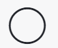 | Create StartEvent - начальное событие |
| 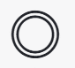 | Create Intermediate/Boundary Event - промежуточное событие |
| 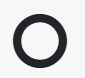 | Create EndEvent - завершающее событие |
| 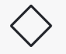 | Create Gateway - развилка или шлюз, логический оператор |
| 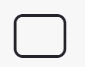 | Create Task – задача |
| 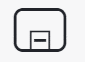 | Create expanded SubProcess – несколько task, выделенные в отдельную подзадачу |
Create Set document status – изменение значения статуса элемента бизнес-процесса |
|
| 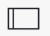 | Create Pool/Participant – пул, используются для разграничении ответственности между задачами, организациями, пользователями.
Пулы взаимодействуют между собой только потоками сообщений.
|
{kind=link}
{kind=link}
{kind=link}
{kind=link}
{kind=link}
{kind=link}
{kind=link}
{kind=link}
Любой бизнес-процесс начинается с начального события и заканчивается конечным событием.
Вы создаете диаграмму БП, выбирая на Панели элементов нужные вам элементы диаграммы и соединяете их потоками управления. Выделив любой элемент диаграммы, справа от него появляется панель кнопок
{kind=link}
На панели рядом с элементом расположены следующие кнопки:
| 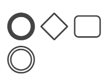 | создать следующий элемент диаграммы, связанный с выделенным потоком управления |
| 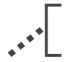 | добавить текст аннотации к элементу |
изменить значение статуса элемента бизнес-процесса |
|
изменить тип элемента
Нажать для изменения типа элемента и далее выбрать соответствующий тип.
|
|
удалить элемент |
|
связать элемент с любым другим на диаграмме |
{kind=link}
{kind=link}
{kind=link}
{kind=link}
{kind=link}
Основные типы элемента Задача:
пользовательская задача |
|
| 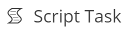 | задача-сценарий |
отправка сообщений |
|
[не реализован] получение сообщений |
|
| 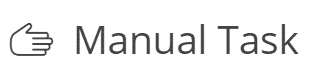 | [не реализован] ручное выполнение |
| 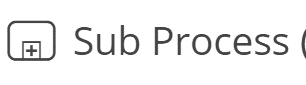 | задача, имеющая вложенный процесс |
{kind=link}
{kind=link}
{kind=link}
{kind=link}
{kind=link}
{kind=link}
Основные типы элемента Шлюз:
| 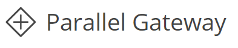 | параллельный шлюз, используется для обозначения слияния/ ветвления потоков управления в рамках процесса |
| 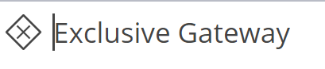 | исключающий шлюз, используется для ветвления потока управления на несколько альтернативных потоков, когда выполнение процесса зависит от выполнения некоторого исключающего условия |
| 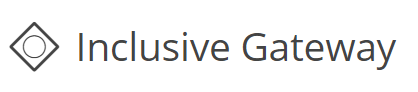 | [не реализован] неэксклюзивный шлюз, используется для ветвления потока управления на несколько потоков, когда выполнение процесса зависит от выполнения условий |
| 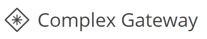 | [не реализован] комплексный шлюз, используется для ветвления потока управления на несколько потоков, когда выполнение процесса зависит от выполнения условий |
| 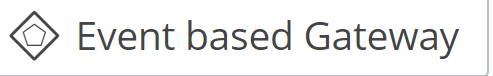 | [не реализован] эксклюзивный шлюз по событиям, используется для ветвления потока на несколько альтернативных потоков, когда дальнейшее выполнение процесса зависит от возникновения некоторого события-обработчика, следующего после шлюза. Событие, идущее после шлюза и возникшее первым, определяет дальнейший ход выполнения процесса |
{kind=link}
{kind=link}
{kind=link}
{kind=link}
{kind=link}
Основные типы элемента Поток управления:
| 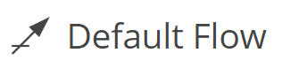 | поток управления по умолчанию, используется, когда необходимо показать, что выполнение процесса будет происходить по этому потоку только если не выполняется ни одно из заданных условий |
| 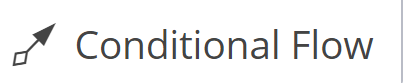 | условный поток управления, используется чтобы показать, что выполнение процесса будет происходить по этому потоку только в том случае, когда выполнятся заданное условие.
Такой тип элемента выбирается, если условный поток управления является исходящим от процесса
|
{kind=link}
{kind=link}